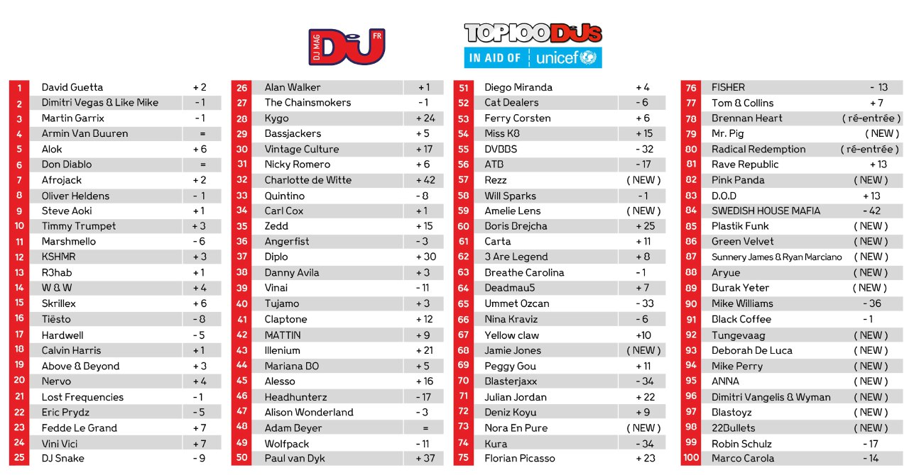

Finalmente llego el dia y hoy sabado 7 de noviembre ya tenemos los resultados. Hubieron muchas nuevas entradas (Dimitri Vangelis & Wyman) y otros que salieron del top con respecto a la votacion del año pasado (Dash Berlin). Nosotros consideramos
que son justas las posiciones, (si bien es sabido que esta es una lista de popularidad mas que de talento) creemos que David Guetta merece la primera posicion.
Si lo tuyo es lo alternativo tambien tenemos el listado de Djs Alternativos que esta revista saco en conjunto con Beatport, checalo
"AQUI."
Si te interesa saber la posicion de tu Djane favorita, los resultados saldran el dia 15 de noviembre, por lo mientras revisa el listado de año pasado en el siguiente "ENLACE."
Ahora si, les dejamos el listado completo para que busquen la posicion de su dj favorito y saquen sus propias conclusiones.
